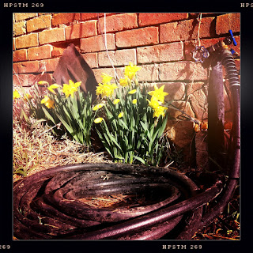

Recovered weblog entry
Some more old stuff and lovely flowers, as well

I swear, they just bloomed all on their own!
Lens: Lucifer VI
Film: Pistil

Recovered weblog entry

I swear, they just bloomed all on their own!
Lens: Lucifer VI
Film: Pistil